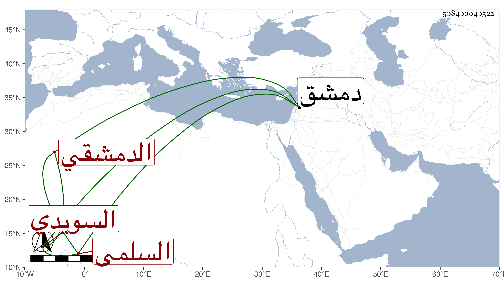

0902Sakhawi.DawLamic.ITO20230111-ara1.EIS1600.508400040522
Biography ID: 508400040522
351
محمد بن عثمان بن محمد السلمي السويدي ثم الدمشقي . سمع من ابن الشيرجي جزء الأنصاري ومن علي بن موسى الصفدي والتقي بن رافع وجماعة ووقع في الحكم في ولاية البلقيني لقضاء دمشق وفاق أقرانه في ذلك . قال ابن حجي : كان صحيح العدالة محررا عارفا بالشروط انفرد بذلك في وقته مع حسن خطه وجودة ضبطه . وقد حدث قليلا . مات في ربيع الأول سنة خمس عشرة ، ذكره شيخنا في إنبائه .
